Създаване и приложение на текстови документи
Предимства на компютърната текстообработка
- най-универсалната информационна технология;
- основни дейности: създаване, редакция, форматиране и репродукция на текстови документи;
- възможност за проверка на правилното изписване на думите;
- Текстови редактори (основно за въвеждане и редакториане на текст):
- Edit;
- Pe2;
- Notepad;
- Write и други.
- Текстообработващи системи (въвеждане, редакция, форматиране, автоматизиране на текст):
- Microsoft Word;
- Word Perfect и други;
- Настолни издателски системи (типографски инструменти):
- Adobe Page Maker;
- Microsoft Publisher и други.
Структурни елементи на текстовия документ
- Символ (знак) е най-малката неделима част, с която се изгражда текста;
- големи и малки букви от различни азбуки;
- арабски (0-9...), латински (I, II, III, IV....X...) цифри;
- всички препинателни знаци;
- математически и специални символи;
- зодиакални и други графични знаци;
- управляващи символи (интервал, табулация, Enter и други);
- дума е поредица от знаци без интервал между тях;
- ред е поредица от знаци, които се намират на една хоризонтална линия;
- изречение е последователност от думи и препинателни знаци, завършваща със знак за край на изречение;
- параграф (абзац) - последователност от думи, препинателни знаци и изречения
завършващи със знак за край на параграф. Всеки Enter слага край на текущ параграф.;
- раздел (секция) е целият документ или част от него, който има специфични характеристики за печат и форматиране;
- страница е част от текста, който се отпечатва върху едната страна на лист хартия;
- компютърен текстов документ се състои от един, два или много абзаци, подредени в последователност от страници;
Основани понятия
✓ Раздел Файл (File) (MS Office Backstage);
✓ Лента за инструменти за бърз достъп (Quick Access Toolbar);
✓ Заглавна лента (Title Bar)
✓ Лента (Ribbon)
✓ Прозорец на документа
✓ Лента за превъртане (Scroll Bar);
✓ Лента на състоянието (Status Bar);
✓ Бутони за показване, визуализация на документа по различен начин (Documents Views);
✓ Плъзгач за мащабиране (Zoom);
Забележка: някои от тези елементи могат да се персонализират, чрез кликване с ДБ върху тях и избор на съответни параметри.
Файлови формати – в Word, Excel и Power Point се използват файлови формати, които се основават на езика XML
(Extensible Markup Language) и използват форматите на Office Open XML.
Това гарантира повишена защита на файловете, по-малка опасност от повреждане и повече функционални възможности. (.docx, .xlsx, .pptx).
XML е разширяем маркиращ език. Той е стандарт (метаезик), дефиниращ правилата за създаване на специализирани маркиращи езици.
Той указва как да бъде структуриран един документ (чрез маркиране с етикети), но не и какво означават отделните маркери (етикети).
Графичен потребителски интерфейс
- Лентата (Ribbon) замества старата организация, която се реализира чрез падащи менюта.
Може да се свива и разгъва чрез стрелката в десния край на лентата. Съдържа:
- Раздели (Tab) всеки раздел представлява основните задачи,
които се извършват в конкретната програма.
Техните наименования подсказват какви групи от команди се намират в тях.
- Групи, панели (Panel) съдържат логически свързани сродни команди (ограничени са от вертикални линии);
- Команди бутони, менюта или полета или комбинации между тях (напр. бутон със стрелка);
- Допълнителни, контекстни раздели;
- Галерии (Quick Style Gallery);
- Визуализация на живо (Live Preview);
- Лента с инструменти за бърз достъп (Quick Access Toolbar) съдържа команди, които се
виждат винаги, независимо от раздела, който е активен в момента.
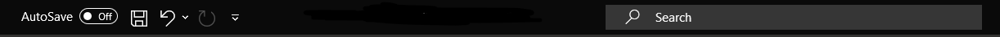
- Запази (Save) - Ctrl + S;
- Отмени (Undo) - Ctrl + Z;
- Повтори (Redo) - Ctrl + Y;
- Намери (Find) - Ctrl + F;
- Изглед Backstage (Alt + F) - Раздел файл (File) - предлага достъп до команди за работа с файловете
отваряне, съхраняване, печат, управление и др.
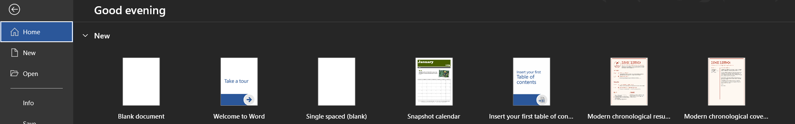
- Персонализиране на лентата (Customize Ribbon) - File -> Options -> Customize the Ribbon;
Меню, от което могат да се добавят/премахнат допълнителни команди или групи от команди на програмата;
- Изгледи на документи (Document Views) - съдържа команди за превключване между пет изгледа,
които са подходящи заразлични дейности в документа:
- Четене на цял екран (Full Screen Reading) (Alt + W и след това F) изглед на цял екран, подходящ за четене на книга;
- Оформление за печат (Print Layout) (Alt + Ctrl + P) нормален изглед (както ще изглежда отпечатан върху хартията),
подходящ за въвеждане и оформяне на текста;
- Структуриран изглед (Outline) (Alt + Ctrl + O) изглед с открояване на структурата на документа;
- Оформление за уеб (Web Layout) (Alt + Ctrl + W) изглед като Webстраница;
- Чернова (Draft) изглед (Alt + Ctrl + N), удобен за корекции на текста.
- Настройки на лентата на състоянието (Status Bar)
- Най-често използвани опции:
- Page Break - Layout -> Breaks -> Page Break; - Ctrl + Enter
- Page Number - Insert -> Page Number -> Bottom of page; - Alt + N + NU + B и избираме позиция
- Line number - Layout -> Line Numbers -> - Alt + P -> LN -> Continuous / Restart on Page / Paragraph и др.
Пълен изглед на лента с команди, инструменти, бутони (ribbons)
Раздел Home / Начало (Alt + H), който съдържа следните групи:
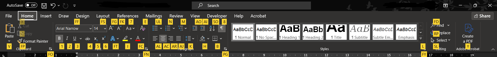
- Clipboard – съдържа:
- команди, с които се реализират функциите на клип борд паметта Alt + H -> FO
(Copy, Cut, Paste, Format Painter); в долния десен ъгъл на секцията се Ctrl + F3 - преместване на абзаци в клипборд
отваря допълнителен панел за работа с клипборд паметта. Ctrl + Shift + F3 - поставяне
- Font Ctrl + D / Ctrl + Shift + F
– команди за форматиране на символи; с кликване върху стрелката в долния десен ъгъл на
групата се отваря диалогов прозорец с допълнителни функции за форматиране на символи.
- Отваряне на прозорез за смяна на шрифт: Ctrl + Shift + F
- размер (size); Ctrl + Shift + < / >
- цвят (color); Alt + H -> FC -> Arrow Keys (← ↓ ↑ →)
- изобразяване (bold, italic, underline); Ctrl + B / I / U
- горен и долен индекс (superscript / subscript); Ctrl + Shift + / Ctrl + =
- междусимволно разстояние (spacing characters); Ctrl + D -> Advanced -> Spacing: Norm. / Exp. / Cond.
- Добавяне на текст към маркиран списък (bullet): Ctrl + Shift + L
- разстоянието между редовете (line spasing); Ctrl + 1 (1.0) / Ctrl + 2 (2.0) / Ctrl + 5 (1.5)
- Paragraph съдържа: Alt + H -> PG
- команди за форматиране на абзаци;
- с кликване върху стрелката в долния десен ъгъл на групата се отваря
диалогов прозорец с допълнителни функции за форматиране на абзаците в текста.
- Нормален стил на текста (Normal style): Ctrl + Shift + N
- Копирай с форматиране: Ctrl + Shift + C
- Постави с форматиране: Ctrl + Shift + V
- премахване на отстъп Ctrl + Shift + M
- изчистване на форматиране Ctrl + Q
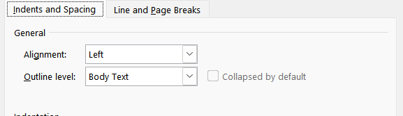
- Разположение на абзаца спрямо наборното поле (подравняване на редовете)
- в ляво (left); Ctrl + L
- в дясно (right); Ctrl + R
- центрирано (center); Ctrl + E
- двустранно подравнено (justify); Ctrl + J
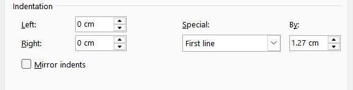
- отстъп на текст от ляво и дясно Alt + H -> PG -> Idents and Spacing ->
- дължина на отстъп (first line)/ настъп (hanging) в първия ред от абзаца; Ctrl + T
- отстъп на лявата и дясната граница на абзаца (identation); Ctrl + M
- Special -> First Line: 1.27
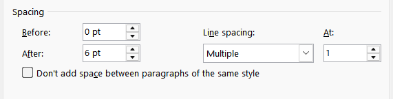
- Line Spacing -> 1.00
- преди и след абзаца (Spacing before / after); Alt + H -> PG -> Spacing: Before / After
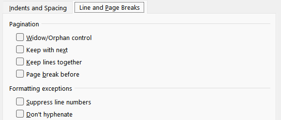
- разположение на абзаца в края на страницата (line and page breaks); Alt + H -> PG -> Line and Page Breaks
- Styles – съдържа: Alt + H -> L
- стандартно дефинираните стилове, които могат да се прилагат към абзаците в текста.
- Editing – съдържа команди:
- търсене и замяна на текст (Find и Replace); Ctrl + H
- инструменти за маркиране (селектиране) Alt + H -> SL
на обекти (Select).
- Показване/скриване на специални символи Ctrl + Shift + *
- и други...;
Раздел Insert / Вмъкване (Alt + N), който съдържа следните групи:
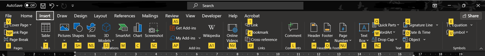
- Pages – предлагат се средства за
- титулна страница (Cover Page); Alt + N -> V
- празна страница (Blank Page); Alt + N -> NP
- нова страница (Page Break - разделител на страницата). Alt + N -> B
- Tables – предлагат се средства за вмъкване на таблица с:
- чрез избор в диалогов прозорец; Alt + N -> T -> Arrow Keys (← ↓ ↑ →)
- определен брой редове и колони чрез маркиране; Alt + N -> T -> I -> брой Columns / Rows
- бутон за начертаване на таблица; Alt + N -> T -> D
- команда за създаване на екселска таблица. Alt + N -> T -> X
- Illustrations – съдържа команди за:
- вмъкване на графични файлове; Alt + N -> P редакция от Alt + JP
- вмъкване и оформяне на фигури (Shapes); Alt + N -> SH
- вмъкване на графични изображения от колекцията (SmartArt); Alt + N -> M
- вмъкване на графика (Icons) (организационни диаграми); Alt + N -> NS
- диаграми на данни от таблица (Chart) Alt + N -> C
- вмъкване на графично изображение, което съдържа „снимка на екрана” (ScreenShot). Alt + N -> SC
- Links – съдържа:
- Existing File or Page / Hyperlink - връзки към уеб страница; Ctrl + K
- картинa;
- Create New Document / Създай нов документ;
- Place in this Document -> Bookmark – създаване на показалец за задаване на име към конкретна
точка от даден документ с цел задаване на хипервръзки,
които направо да прескачат на указаното с показалеца място
- вмъкване на кръстосана препратка (Cross-reference)
препращане към заглавия, фигури, таблици и др. чрез вмъкване на препратки с текст.
- E-mail Address / имейл адрес вмъкване на кръстосана препратка (Cross-reference) препращане към заглавия,
фигури, таблици и др. чрез вмъкване на препратки с текст.
- Header & Footer – съдържа
- команди за вмъкване на горно заглавие; Alt + N -> H (Header)
- долно постоянно заглавие (колонтитул); Alt + N -> F (Footer)
- номера на страниците. Alt + N -> NU -> B -> Arrow Keys (↓ ↑)
- Text – съдържа:
- команди за вмъкване на текстова кутия (Tex Box) в документа; Alt + N -> X
- за художествено оформен текст (Word Art); Alt + N -> W
- Голяма първа буква (Drop Cap); Alt + N -> RC -> Arrow Keys ( ↓ ↑ )
- както и за вмъкване на обекти създадени с други програми. Alt + N -> J
- Symbols – съдържа команди за вмъкване на специални символи или формули в текста, Alt + N -> U
както и създаване и редактиране на формули с вградения редактор в Word.
Раздел Design / Дизайн: (Alt + G), който съдържа следните групи:
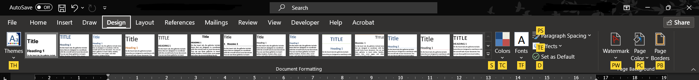
- Themes – съдържа: Alt + G
- богат набор от теми, които предлагат възможности за избор на форматиране; Alt + G -> S
- набор от цветове на тема; Alt + G -> TC
- набор от шрифтове на тема (включително шрифтове за заглавен и основен текст); Alt + G -> TF
- набор от ефекти на тема (включително ефекти за линии и за запълване). Alt + G -> TE
Page Background – съдържа:
- избор на графично изображение (воден знак) за фон; Alt + G -> PW
- средства за промяна на фона за текста (цвят на листа); Alt + G -> PC
- задаване на рамка на страницата. Alt + G -> PB
Раздел Layout / Оформление (Alt + P), който съдържа:
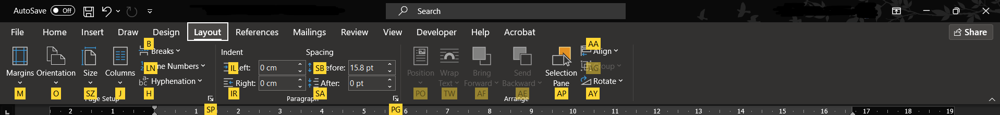
- граници (margins) определят поле, в което се разполага текстът; Alt + P -> M -> Arrow Keys ( ↓ ↑ )
- ориентация (orientation) хоризонтална и вертикална; Alt + P -> O -> Arrow Keys ( ↓ ↑ )
- размер (paper size) определя се от стандартите на хартията за печат Alt + P -> SZ -> Arrow Keys ( ↓ ↑ )
стандарти А, В, С;
- колони / columns на текста; Alt + P -> J -> Arrow Keys ( ↓ ↑ )
- позиция на горен / долен колонтитул (From edge Header / Footer); Alt + P -> SP -> Layout -> Header / Footer
- разположение на повече страници при отпечатване (Multiple Pages); Alt + P -> SP -> Margins -> Multiple Pages
- номериране на редовете / Line Numbers Alt + P -> LN -> Normal / Continuous / Each Page / Parag.
- Page Setup – съдържа:
- средства за задаване на характеристиките на (листа хартия);
- текстовата страница на документа (размер, ориентация, полета, колони);
- възможности за вмъкване на разделители в текста.
- Paragraph – съдържа:
- средства за промяна характеристиките на абзаците; Alt + P -> IL (от ляво) / IR (от дясно)
- междуредово разстояние преди и след абзац; Alt + P -> SB (преди) / SA (след)
- Arrange – съдържа средства за промяна на разположението на графичните Alt + P -> PO
изображения в текста и др. Alt + P -> PW
Alt + P -> AA (подравняване в текста)
Alt + P -> AY (завъртане, обръщане и др.)
Раздел References (Препратки) / (Alt + S), който съдържа следните групи:
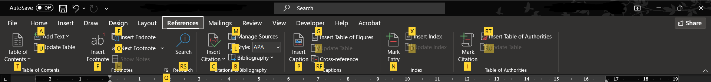
- Table of Contents / Съдържание:
- команда за създаване; Alt + S -> T
- добавяне на текст; Alt + S -> A
- актуализиране на съдържание в документа. Alt + S -> U
- Footnotes – съдържа:
- команда за вмъкване на бележки под линия; Alt + S -> F
- в края на текста; Alt + S -> E
- показване и проследяването им. Alt + S -> O / H
- Citations & Bibliography (цитати и библиография) – съдържа:
- команди за създаване на списък с източници, които са цитирани. Alt + S -> C -> S
- Библиографията може да се генерира автоматично, на базата на Alt + S -> B -> B
информацията за източниците, която са използвани.
- Captions (надписи) – съдържа:
- команда за създаване на таблица Alt + S -> G
(списък) с информация за всички фигури, таблици и формули в документа.
- Index – съдържа:
- команда за създаване и обновяване на индекс – списък с термините, Alt + S -> N
използвани в документа;
- номерата на страниците, където се срещат в текста. Alt + S -> X
- Table of Authorities – съдържа:
- команда за създаване на таблица, съдържаща списък с позоваванията на Alt + S -> RT
автори или източници в документа. ALt + S -> I
Раздел Mailings (Alt + M), който съдържа следните групи:
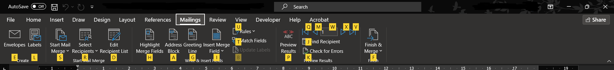
- Create – съдържа команди за създаване и отпечатване на етикети и писма; Alt + M -> E
- Start Mail Merge – съдържа команди за създаване на циркулярни документи; Alt + M -> S
- Select Recipients - добавяне на екселска база с данни; Alt + M -> R
- Write & Insert Fields – съдържа:
- Highlight Merge Field - осветяване на всички добавени полета; Alt + M -> H
- Address Book - добавяне на адресна книга; Alt + M -> A
- Greeting Line - поздравително поле - Уважаема/уважаеми....; Alt + M -> G
- Insert Merge Field - полета с текст от база с данни; Alt + M -> I -> Arrow Keys ( ↓ ↑ ) избиране на колони
Preview Results – съдържа:
- команди за замяна на полетата в циркулярни документи Alt + M -> P
с реалните данни от адресната книга, за да могат да се прегледат,
проверява за грешки и др.
- Finish – създава:
- документ, съдържащ циркулярни документи; Alt + M -> E
- отпечатва; Alt + M -> P
- изпраща по e-mail. Alt + M -> S
Раздел Review (Преглед) (Alt + R), който съдържа следните групи:
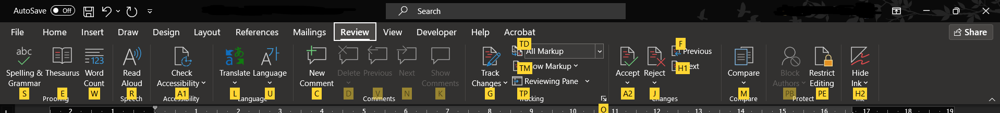
- Proofing – съдържа:
- команди за проверка на правописа и граматиката; Alt + R -> S
- търсене на синоними (при наличие на инсталиран синонимен Alt + R -> E
речник на съответния език),
- преброяване на думите в текста и др. Alt + R -> W
- Language – съдържа:
- команда за превод на думи и изрази; Alt + R -> L
- избор на език за проверка на правописа. ALt + R -> U
- Comments – в тази група се съдържат:
- команди за работа с коментари – Alt + R -> C / D
създаване, редактиране и изтриване на коментар
- търсене и преминаване от един в друг коментар. Alt + R -> N / P
- Tracking – съдържа:
- команда за установяване на режим за проследяване на промените; Alt + R -> G
- Changes – командите, които се намират в тази група дават възможност
да се преглеждат и приемат промените и коментарите в документа, Alt + R -> A2
или да отхвърли всяка промяна. Alt + R -> J -> M / L / S
- Compare – съдържа:
- команди за сравняване и комбиниране на няколко варианта на документа. Alt + R -> M -> Arrow Keys ( ↓ ↑ )
- Protect – съдържа команди за:
- добавяне на защита към документа Alt + R -> PE -> 1. [ ]
- обозначаване на частите, които могат да се променят. Alt + R -> PE -> 2. [ ]
Раздел View (Изглед) Изглед (Alt + W) , който съдържа следните групи:
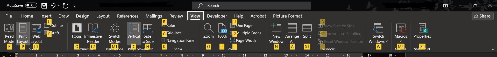
- Document Views – съдържа:
- команди за превключване между пет изгледа, които са подходящи за различни дейности в документа:
− Print Layout – нормален изглед Alt + W -> P Alt + Ctrl + P
подходящ за въвеждане и оформяне на текста;
− Full Screen Reading – изглед на цял екран, Alt + W -> F
подходящ за четене на книга;
− Web Layout – изглед като Web страница; Alt + W -> L1
− Outline – изглед с открояване на структурата на документа; Alt + W -> U Alt + Ctrl + O
− Draft – изглед, удобен за корекции на текста. Alt + W -> E
- Show – съдържа:
- команди за визуализиране на размерната линия (рулер) Alt + W -> R
- помощна мрежа и панел за подпомагане на навигацията в документа. Alt + W -> G
- Zoom – съдържа:
- команда, която в диалогов прозорец осигурява процентно мащабиране Alt + W -> Q
- Window – съдържа:
- команди, които подреждат няколко едновременно отворени прозорци Alt + W -> B
- превключват от един на друг прозорец при отворени няколко документа. Alt + W -> W
- Macros – команда за:
– преглед на наличните в документа макроси, Alt + W -> M2 -> V
- тяхното изпълнение, редактиране, изтриване,
- създаване на нови макроси.
Раздел Picture Tools (Alt + JP) – визуализира се, когато е маркиран графичен обект.
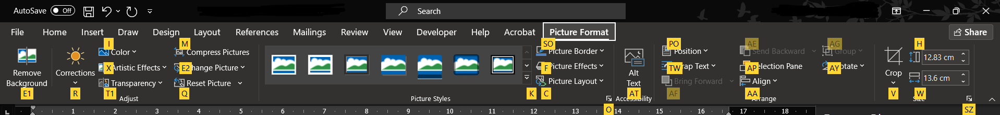
- Adjust – съдържа:
- команди за промяна на характеристиките на графичния обект –
- премахване на фон; Alt + JP -> E1
- цветове; Alt + JP -> I
- ефекти; Alt + JP -> X
- яркост; Alt + JP -> R
- прозрачност и др. Alt + JP -> T1
- Picture Styles – съдържа:
- команди за промяна стила на визуализация на графичния обект; Alt + JP -> K
– представяне като графика SmartArt; Alt + JP -> F / C
- оформяне на рамка и др. Alt + JP -> SO
- Arrange – съдържа:
- команди за задаване на разположението на графичния обект в документа Alt + JP -> PO
- позиция спрямо други графики Alt + JP -> TW
- подравняване (Align); Alt + JP -> AA
- групиране (Group); Alt + JP -> AG
- завъртане (Rotate); Alt + JP -> AY
- и други
- Size – съдържа команди за
- промяна размерите на графичния обект за височина; Alt + JP -> H
- за широчина; Alt + JP -> W
- както и изрязване на части от него. Alt + JP -> V
Раздел Table Design (Alt + JT) – съдържа следните групи от команди (при маркирана таблица):
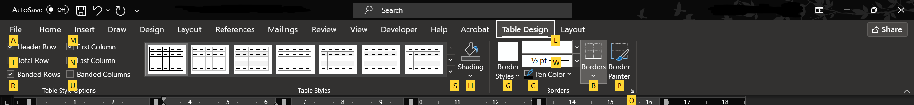
- Table Style Options – съдържа:
- команди за визуализация на елементи на таблицата. Alt + JT -> A/T/R/M/N/U
- Table Style – съдържа:
- команди за промяна стила на изобразяване на таблицата; Alt + JT -> S
(чрез избор от набор от множество стилове)
- цвят за запълване на клетките; Alt + JT -> H
- оформяне на рамка и др.
- Borders – съдържа
- допълнителни команди за оформяне на рамката на таблицата. Alt + JT -> O/G/C/B/P
Раздел Layout (Alt + JL) съдържа следните групи от команди:
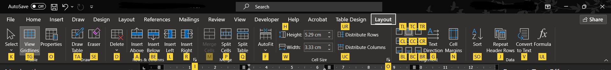
- Table – съдържа:
- команди за маркиране (Select) на елементи на таблицата; Alt + JL -> K
- промяна визуализацията на мрежата; Alt + JL -> TG
- командата за отваряне на диалогов прозорец Table Properties. Alt + JL -> O
- Rows & Columns – съдържа:
- команди за добавяне и изтриване на редове и колони. Alt + JL -> E/BE/L/R/D
- Merge – съдържа:
- команди за обединяване; Alt + JL -> M
- разделяне на клетки; Alt + JL -> P
- таблица/и. Alt + JL -> Q
- Cell Size – съдържа:
- команди за промяна размерите на клетки. Alt + JL -> F / H / W / UR / UC
- Alignment – съдържа:
- команди за задаване на разположението на текста в клетките на таблицата. Alt + JL -> G / N и др.
- Data – съдържа:
- команди за сортиране; Alt + JL -> SO
- вмъкване на формули; Alt + JL -> UL
- повтаряне на header; Alt + JL -> J
- convert to text. Alt + JL -> V
Раздел Shape Format (Alt + JD) – визуализира се, когато е маркиран (или се обработва) обект,
представляващ фигура (Shapes), текстово поле (Text Box), художествено оформен текст (WordArt) и др.
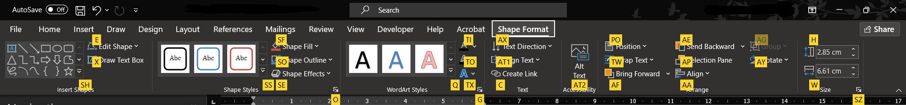
- Insert Shapes – съдържа:
- команди за вмъкване на фигури (Shapes); Alt + JD -> SH
- текстова кутия (Text Box); Alt + JD -> X
- промяна на формата на обекта. Alt + JD -> E
- Shape Styles – съдържа команди за промяна на характеристиките на обекта:
- фон; Alt + JD -> SF
- цветове; Alt + JD -> SO
- ефекти; Alt + JD -> SE
- яркост, контраст и др. Alt + JD -> O
- WordArt Styles – съдържа:
- команди за промяна на характеристиките Alt + JD -> SS
на художествено оформен текст (WordArt).
- Text – съдържа:
- команди за промяна разположението на текста в обекта.
- Arrange – съдържа:
- команди за задаване на разположението на графичния обект в документа Alt + JD -> PO
(спрямо страницата или текста), позиция спрямо други графики; Alt + JD -> TW
- подравняване (Align); Alt + JD -> AA
- групиране (Group); Alt + JD -> AG
- завъртане (Rotate). Alt + JD -> AY
- Size – съдържа:
- команди за промяна размерите на обекта. Alt + JD -> H / W
Бързи клавишни комбинации в Word
- Копиране на текст: Ctrl + C
- Изрязване на текст: Ctrl + X
- Поставяне на копиран текст: Ctrl + V
- Отмяна на последно действие: Ctrl + Z
- Повтори отменено действие: Ctrl + Y
- Маркиране на всичкo: Ctrl + A
- Записване на промени: Ctrl + S
- Принтиране на документ: Ctrl + P
- Единичен междуредов интервал: Ctrl + 1
- Двоен междуредов интервал: Ctrl + 2
- 1.5 междуредов интервал: Ctrl + 5
- Bold / удебеляване на текст: Ctrl + B
- Italiic / накланяне на текст: Ctrl + I
- Underline / подчертаване на текст: Ctrl + U
- Центриране на текст: Ctrl + E
- Подравни текст от ляво: Ctrl + L
- Подравни текст от дясно: Ctrl + R
- Двустранно подравняване: Ctrl + J
- Постави хипервръзка: Ctrl + K
- Прозорец за търсене на текст: Ctrl + F
- Прозорец за търсене и замяна: Ctrl + H
- Създай нов документ: Ctrl + N
- Отвори съществуващ документ: Ctrl + O
- Премахване на форматиране на абзац: Ctrl + Q
- Затвори текущ документ: Ctrl + W
- Отиди в началото на документа: Ctrl + Home
- Отиди в края на документа: Ctrl + End
- Скриване на лентата на меню: Ctrl + F1
- Преглед преди печат: Ctrl + F2
- Изрязване на няколко абзаца наведнъж: Ctrl + F3
- Поставяне на изрязаните абзаци: Ctrl + Shift + F3
- Затваряне на текущ прозорец: Ctrl + F4
- Превключване между отворени документи: Ctrl + F6
- Добави поле (къдрави скоби): Ctrl + F9
- Преоразмеряване/максимизиране на прозорец Ctrl + F10
- Отвори нов файл: Ctrl + F12
- Обнови полета: F9
- Провери документа за правопис: F7
- Затвори текущ прозорец: Alt + F4
- Поставяне на празно пространство: Ctrl + Tab
- Премахване на форматиране от символите: Ctrl + Space
- Поставяне на Page break: Ctrl + Enter
- Отваряне на прозорез за смяна на шрифт: Ctrl + Shift + F
- Добавяне на текст към маркиран списък (bullet): Ctrl + Shift + L
- Нормален стил на текста (Normal style): Ctrl + Shift + N
- Копирай с форматиране: Ctrl + Shift + C
- Постави с форматиране: Ctrl + Shift + V
- Увеличи размер на шрифта: Ctrl + Shift + >
- Намали размер на шрифта: Ctrl + Shift + <
- Проследяване на бъдещи промени: Ctrl + Shift + E
- Пренасящо тире: Ctrl + Shift + -
- Добави коментар на текст: Ctrl + Alt + M
- Избери текст до края на документа: Ctrl + Shift + End
- Избери текст до началото на документа: Ctrl + Shift + Home
- Добавяне на текуща дата: Alt + Shift + D
- Добавяне на текущ час: Alt + Shift + T
- Преоразмеряване на таблици: Alt + Shift + Arrow Keys (← ↓ ↑ →)
- Избиране на текст дума по дума: Ctrl + Shift + Arrow Keys (← ↓ ↑ →)
- Преместване на селектор от дума на дума: Ctrl + Arrow Keys (← ↓ ↑ →)
- Маркиране - символ по символ: Shift + Arrow Keys (← ↓ ↑ →)
- Четене на текст - страница по страница: Page Up / Page Down
- Отиди на страница: Ctrl + G / F5
- Долен индекс: Ctrl + =
- Горен индекс: Ctrl + Shift +
- Добави към Heading 1: Alt + Ctrl + 1
- Добави към Heading 2: Alt + Ctrl + 2
- Покажи/скрий скрити символи: Ctrl + Shift + *
- Вмъкни непечатаемо тире: Ctrl + Shift + -
- Вмъкни непечатаем интервал: Ctrl + Shift + Space
- Символ регистрирана тъговска марка®: Alt + Ctrl + R
- Превключване между Изгледи: Alt + Ctrl + P / O
Превключване между менютата
- Превключи на Файл / File: Alt + F
- Превключи на Начало / Home: Alt + H
- Превключи на Вмъкни / Insert: Alt + N
- Превключи на Рисуване / Draw: Alt + A
- Превключи на Дизайн / Design: Alt + G
- Превключи на Оформление / Layout: Alt + P
- Превключи на Препратки / References: Alt + S
- Превключи на Пощенски. съобщ. / Mailings: Alt + M
- Превключи на Преглед / Review: Alt + R
- Превключи на Изглед / View: Alt + W
- Превключи на Разработчик / Developer: Alt + L
- Превключи на Помощ / Help: Alt + Y
- Превключи на Формат на снимка / Picture Format Alt + JP
Начална страница